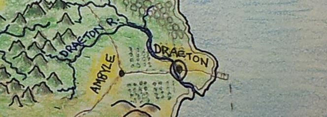
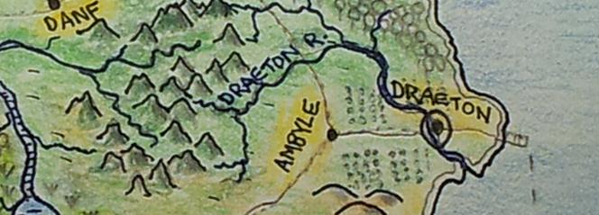
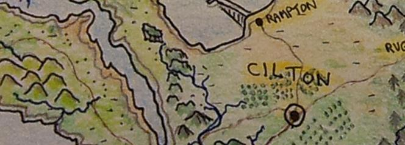
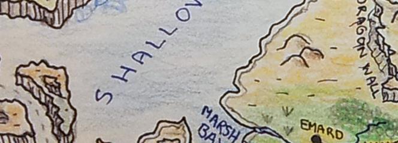

Draeton
This is the largest city on the East side of Sharnia. 3,000 people live in this strongly defended city that lies of the Draeton River. It is surrounded by green pastures and protected by multiple stone walls. There is a good road to the East docks, which provides valuable trade routes to the other cities.
Slyk
Infamous party town, known as the star of the desert - here you will find Inn's, gambling, blackmarket traders, exotic goods, adult entertainment and plenty of atmosphere. Be careful here, as there are many rogues, thieves and other unsavoury characters who make this their home - you should never flash large amounts of money around, and travellers should stick to the Inn's on the main street and avoid the back alleys.
Ambyle
Farming town West of Draeton, known for their famous weekend markets selling exotic produce grown in the warm regions north of the Eastern Desert.
Danf
Located at the exact geographic centre of Alrona, this friendly town is surrounded by forests and creeks and makes for a relaxing place to rest when travelling. North of Danf is the Wolf Mountains, and beyond that lie the ancient ruins, so many adventurers use this town as a stepping stone to the Northern wilds and there are all manner of traders and professions in the town.
Farlon
A beautiful Southern town situated on the South beach of Sharnia, Farlon is a top destination for travellers and holiday makers, though the road through the desert and past Slyk can be dangerous, so most travellers come to Farlon from Draeton by boat.
Forst
East of Slyk and built near the Everflow river, Forst is a densely wooded town where some of the best carpernters in Alrona live and work.
Ruet
Deep in the old pine forest that surrounds the ancient temple "Enigma" lies the town of Ruet. This is the last town to get supplies if heading North through the Western Desert.
Watlo
Walto is home to the many scientists and explorers investigating the Ancient ruins - it has the oldest school in Sharnia, and the engineering devices for sale here are often surprising.
Emard
A large town near the delta of the Everflow River, Emard produces bags and containers made from the reeds growing in Marsh Bay.
Umod
On the far West of the lower peninsula of Jawbone bay lies Umod, a quiet self contained town whose residents are a mix of Men and Elves focused on the study of science to explain the magic used in Alrona. It is uncertain whether the Elves or Men first settled in Umod, and it is one of the oldest towns in Sharnia which a unique architecture.
Edl

Situated on an island west of Umod, and connected by a massive bridge to the mainland, Edl is a peaceful fishing town and has regular trade routes between Zinad and Sharnia.
Binta
Binta is a farming town with a boat routes to Edl, Zinad and Farlon / Draeton and sells the finest cheeses and other exotic foods.
Doctade
The city of Doctade is ruled by a democracy, and though there is an impressive castle, they have never had the need to fight or go to war. The finest chefs in the land are usually trained in the Doctade Gourmet School, and the surrounding land near Hunters ridge provides a variety of food.
Ciltan
The city of Cilton is ruled by Queen Somtril and has enjoyed a peaceful existance for many years, with no armed conflict since the Drans emerged from the Enigma forest and attacked the city in the first age. Cilton was overrun and they retreated to the caves by the twisted river, but regrouped and with the help of magicians from Umod, they took back the city and destroyed the Drans. Since that time, Cilton has regular patrols around the southern areas of Sharnia, though no Drans have been seen for many years.
Rampton
The town of Rampton lies at the edge of Highwall Bay and provides trade routes to Cilton thanks to a large Man/Elf made ramp that connects the high cliffs of North west Sharnia to the water. The folks in Rampton are happy go lucky adventurers and hold an annual event "ramp rolling" where they race makeshift carts down the 200 foot ramp and see who can launch their cart furthest into the water.
Tambent
South of Ciltan, on the road to Doctade lies the hunting town of Tanbent. The rich grasslands and woods provide the best hunting in Sharnia, and all Tanbent residents learn to ride at an early age.
Asint

Elven farmlands surround the town of Asint which resides on the edge of Shimmer Lake in Zinad.
Torep
Nestled in the hills on the West of Zinad lies the large town Torep, home to the Mountain Elves known for their amazing climbing abilities. "If a Torep Elf cant climb it, it is not climbable."
Landel
The high walls of Zinad make access to the land impossible (except for the Torep elves), and when the Elves first arrived in Zinad they make a massive ramp to the water called Elven Landing. The city of Landel was built here and stands as the first, and only defensive city in Zinad. They repelled several attacks from Drans over the years, though to originate from Helron, and are frequently fighting the giant Rezen that attempt to sneak into the land.
Abylem
Wood Elves live in the town of Abylem, though they keep mostly to themselves.
Nordat

Elven hunters and riders prefer to live in Nordat, a large town in the North of Zinad.
Hem

The city of Hem is situated on a plateau in the North of Zinad and is home to the ancient elven thinkers whose task is to help the land recover from the ancient event.